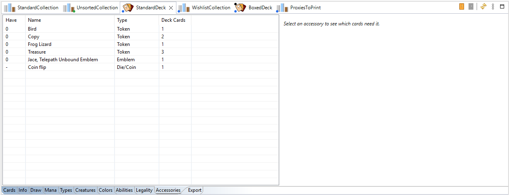

Sideboard, extra list and accessories
Sideboard
A deck can have a sideboard: a separate list that goes with the deck. The sideboard is always
part of the deck's legality check: its cards must be legal in the format too (see
Formats and legality). In commander formats, put the commander there.
- Create it with Also create a Sideboard in the New Deck wizard, or later in the deck's
Edit Properties....
- Open it with Open Sideboard in the deck's toolbar (see Opening them below).
Its tab name starts with
#.
- Imported deck lists with a sideboard section fill it automatically.
- Print it on a card to keep in the deck box: see Printing a sideboard list.
Extra list
The extra list holds what the deck needs besides its cards: tokens, emblems, markers.
- Create it with Also create an Extra list in the New Deck wizard, or later in the deck's properties.
It is created already filled with what the deck needs, at count 0.
- Open it with Open Extra in the deck's toolbar. Its tab name starts with
~.
- Set the count of what you actually have, like any other list.
- After you change the deck, open the extra list and click Refresh (or press F5): in an
extra list, it also updates the list from the deck. It adds what the deck now needs, at count 0, and
removes the entries at count 0 that the deck doesn't need anymore or that repeat a token already listed.
Entries with a count above 0 are never changed. Any printing counts: two Beast tokens from another set
already cover a Beast the deck needs.
Opening them
The Card Navigator hides sideboards and extra lists to keep the tree short (Show Sideboards and
Extras in its menu shows them). You don't need them in the tree to open them: two buttons in the deck's
toolbar do it.
| Button | Does |
|---|
| Open Sideboard (orange) | Opens the deck's sideboard in its own tab. |
| Open Extra (grey) | Opens the deck's extra list in its own tab. |
- A button is greyed when the list doesn't exist yet: create it in the deck's Edit Properties....
- They also work from the sideboard or the extra list itself, to jump from one to the other.
Accessories
The deck's Accessories tab lists everything the deck's cards can create or use, read from the card
text: tokens, emblems, counters, player markers (the monarch, the initiative...) and dice or coins.

It tells you what to bring to the table with the deck. The extra list is where you keep track of the
tokens and markers you actually own for it.
See also: The Deck view ·
Creating a deck